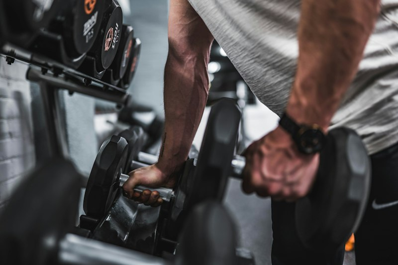
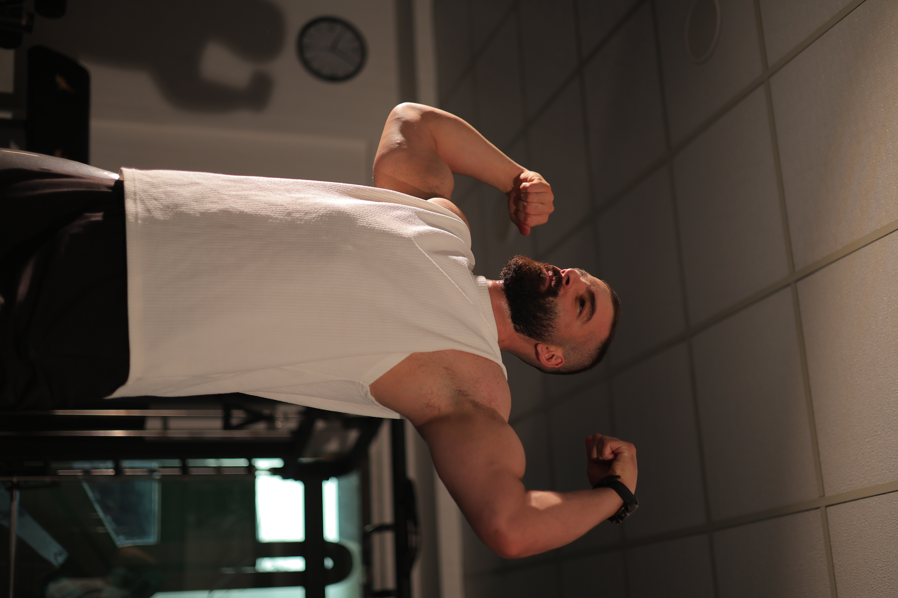
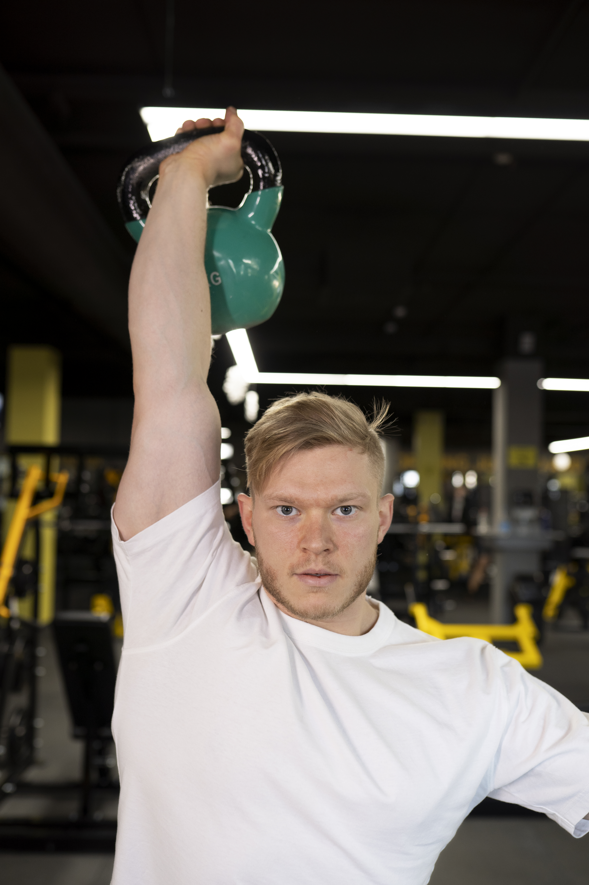
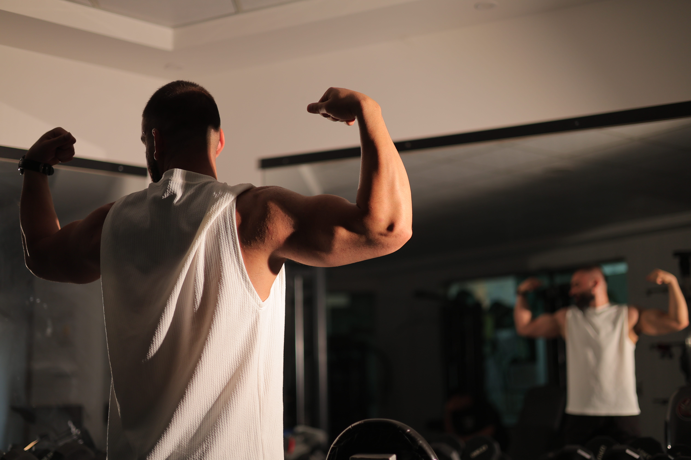
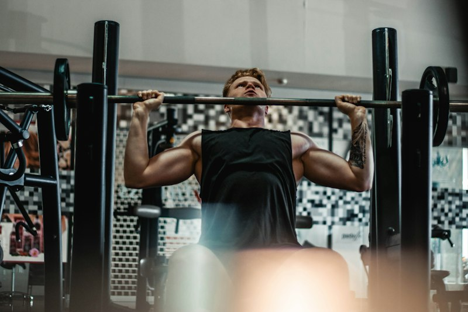
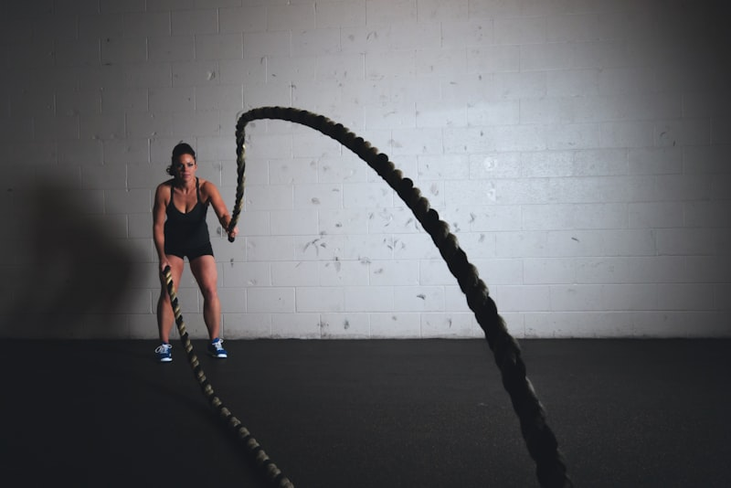
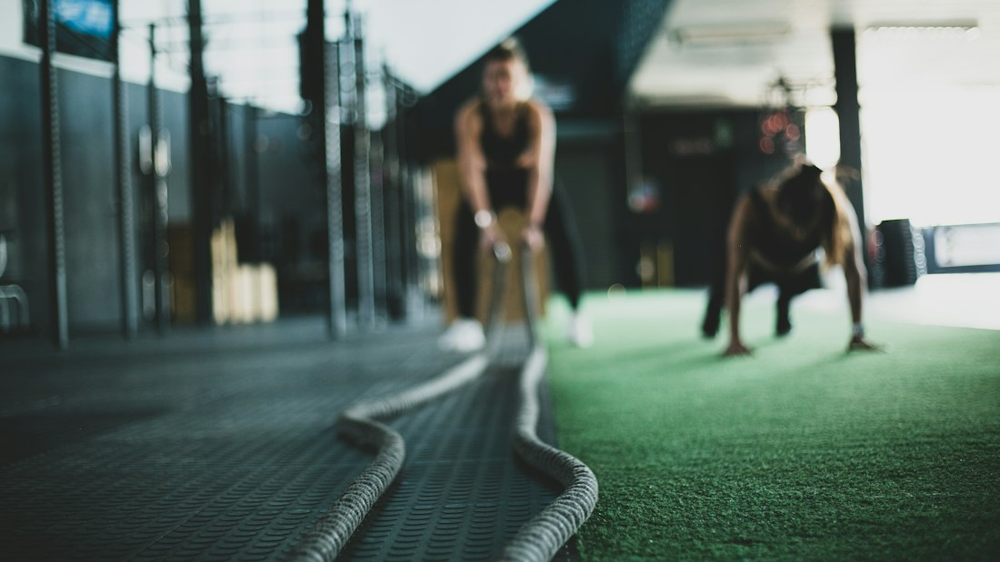
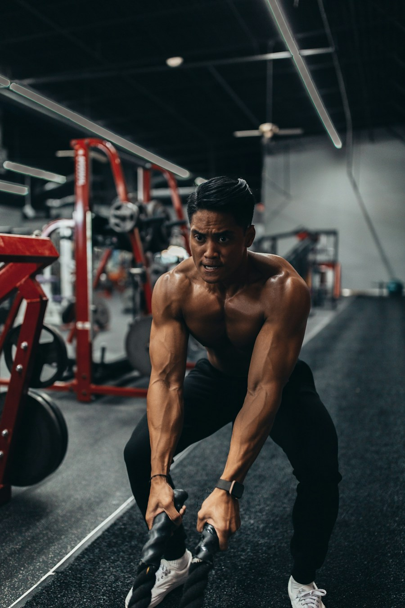
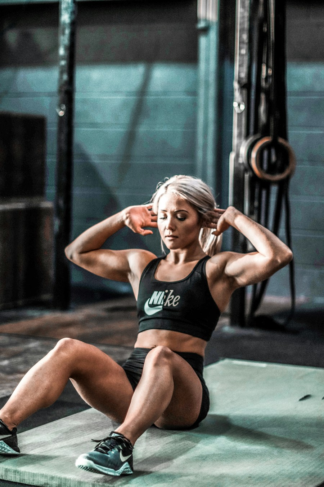
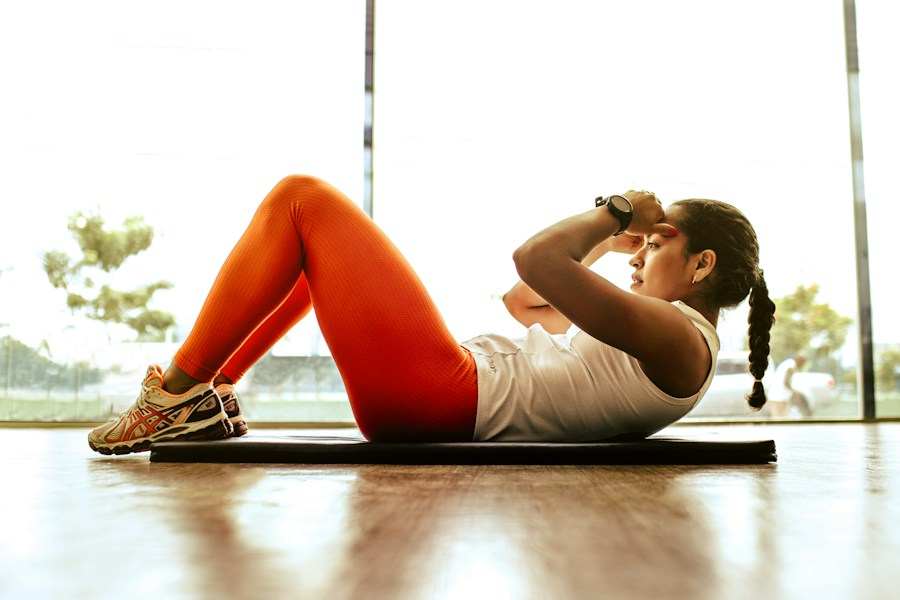

اليوم 01أقوى كل يوم
ابنِ أفضل
نسخة منك.
غيّر جسمك، عزّز ثقتك بنفسك، وعِش حياة أكثر صحة مع آيرونكور للياقة.
متابعة أسبوعية مع المدرب

01 / 04 تدرّب بهدف
$150
النظام الكامل · 12 أسبوعاً

+مع المدرب
أنمار الخطيب
01 — 04هنا تبدأ الرحلة
مدربون خبراء
معتمدون وذوو خبرة
خطة شخصية
مصممة لأهدافك
معدات حديثة
جودة عالية وآمنة
نتائج ملموسة
تابع تقدمك وحقق المزيد

المدة12
أسبوعاً
نظام AK12 للتحولأسبوعاً
برنامج أنمار الخطيب
AK12 — نظام
التحول خلال 12 أسبوعاً.
نظام تحول جسدي متكامل صمّمه المدرب أنمار الخطيب. يجمع بين تدريب مقاومة منظم، وتغذية ذكية مع خيار تدوير الكربوهيدرات، وكارديو تصاعدي، ومكملات مستهدفة، ومتابعة أسبوعية دقيقة. كل متغير قابل للتتبع والتعديل ليتخذ المدرب قراراته بناءً على بيانات حقيقية.
المدة والسعر
12 أسبوعاً · 150 دولاراً للنظام الكامل.
التدريب
4 أيام: صدر، ظهر وبايسبس， أكتاف وترايسبس， أرجل وبطن.
التغذية والكارديو
وجبات منظمة، وخيار تدوير الكربوهيدرات، وكارديو تصاعدي بالوقت والشدة والخطوات.
متابعة وتعديل
بيانات أسبوعية يراجعها المدرب ويحدّث الخطة بناءً عليها.
تقسيمة التدريب
4 أيام منظمة.
تقدّم قابل للقياس.
يتضمن النظام أربعة أيام تدريب أسبوعياً. سجّل أوزانك ودرجة الصعوبة (RIR) في كل جلسة، واتبع قواعد التحميل التصاعدي.
راجع طريقة الاستخدام.jpg) اليوم 02
اليوم 02
اليوم 03
اليوم 04
تأسس20
18
قوة بروح مختلفة18
تعرّف علينا
مكان للعمل
على ما يهم.
نحن أكثر من مجرد مكان للتمرين. هنا تلتزم، وتجد من يشجعك، وتبني نسخة أقوى من نفسك، حصةً بعد أخرى.
مساحة تناسبك
مرافق مدروسة ومعدات عالية الجودة وأجواء خالية من الأحكام.
تدريب يفهم احتياجاتك
فريق يساندك وخطة تلائم أسلوب حياتك فعلاً.
تقدم يستحق الاحتفال
مجتمع يحتفي بكل إنجاز صغير ومحطة كبيرة.
فريقك إلى جانبك
تعرّف على
خبرائنا.
التدريب المتميز يصنع كل الفرق. تعرّف على بعض أفراد الفريق الذين يحققون ذلك.
تدرّب معنا
01جيمس ويلسون
مدرب قوة

02صوفيا مارتينيز
أخصائية يوغا

03ماركوس ريد
مدرب لياقة بدنية
04
آفا بروكس
مدربة شخصية
الاستثمار في رحلتك
150 دولاراً
لنظام AK12 كاملاً.
برنامج تحول متكامل لمدة 12 أسبوعاً بإشراف المدرب أنمار الخطيب.
التدريب
خطة مقاومة منظمة
يتضمن النظام
- 4 أيام تدريب أسبوعياً
- صدر
- ظهر وبايسبس
- أكتاف وترايسبس
- أرجل وبطن
- تسجيل الأوزان ودرجة RIR
- تحميل تصاعدي حسب الخطة
التغذية والكارديو
عناصر مترابطة وقابلة للتعديل
يتضمن النظام
- وجبات منظمة
- خيار تدوير الكربوهيدرات بقرار المدرب
- كارديو تصاعدي: وقت وشدة وخطوات
- مكملات مستهدفة
- متابعة أسبوعية للبيانات
المتابعة والقياس
قرارات دقيقة مبنية على بيانات
يتضمن النظام
- مراجعة أسبوعية من المدرب
- تعديل الخطة من المدرب فقط
- تتبع الالتزام والتقدم
- متابعة كل يوم أحد أو حسب الاتفاق
- تقييم نهائي في الأسبوع 12
$150 للنظام الكامل لمدة 12 أسبوعاً. للاستفسار والتسجيل، تواصل مباشرة مع المدرب.
تواصل مع المدربمتابعة مبنية على بياناتك
12 أسبوعاً
بخطوات واضحة.
كل متغير قابل للتتبع والتعديل. يراجع المدرب بياناتك أسبوعياً ويتخذ قرارات دقيقة بناءً على تقدمك الفعلي.
اعرف ما الذي ستتابعههيكل نظام AK12
كل أسبوع له هدف.
12أسبوعاً
تدريب المقاومة
٤ أيام أسبوعياًالتغذية
وجبات منظمة يومياًالكارديو والخطوات
هدف يومي تصاعديالمتابعة
بيانات أسبوعية ومراجعة المدرب المتابعة كل يوم أحدتعديل الخطة من المدرب
دليلك إلى البرنامج
طريقة الاستخدام
والالتزام.
اتبع خطوات النظام كما هي، وسجّل بياناتك بانتظام. المدرب وحده يحدّث الخطة.
اسأل المدربطريقة استخدام الملف
اتبع الخطوات بالترتيب
- 1. املأ بيانات العميل بالقياسات والأهداف والمعدات ونمط الحياة بدقة.
- 2. سجّل الأوزان ودرجة الصعوبة (RIR) في كل جلسة، واتبع قواعد التحميل التصاعدي.
- 3. التزم بخطة التغذية؛ استخدم تدوير الكربوهيدرات فقط إذا اختاره المدرب.
- 4. نفّذ أهداف الكارديو والخطوات يومياً.
- 5. خذ المكملات حسب الجدول، وابدأ بالأساسية.
- 6. كل يوم أحد أكمل المتابعة الأسبوعية.
- 7. يراجع المدرب بياناتك ويحدّث إجراء المدرب؛ لا تعدّل الخطة إلا بأمره.
- 8. تابع لوحة التقدم وأكمل التقييم النهائي في الأسبوع 12.
خطوات الالتزام
الاستمرارية أقوى من الشدة
- تدرّب 4 أيام أسبوعياً على الأقل؛ استرح أو مارس نشاطاً خفيفاً في أيام الراحة.
- حقّق هدف البروتين يومياً، وابقَ ضمن السعرات المحددة بهامش ±50 سعرة.
- زِن نفسك كل صباح صائماً وبعد الحمام، وسجّل الوزن في المتابعة الأسبوعية.
- التقط صور التقدم (أمام، جانب، خلف) كل أسبوعين بالإضاءة نفسها.
- ردّ على رسائل المدرب خلال 24 ساعة، وكن صادقاً في بياناتك.
- نم 7–9 ساعات وأدِر التوتر؛ الاستمرارية أقوى من الشدة.
طريقة قياس التقدم
سجّل المؤشرات بانتظام
- أساسي: متوسط وزن الميزان الأسبوعي ومحيط الخصر.
- قياسات الجسم: الرقبة، الأكتاف، الصدر، الورك، الذراع والفخذ.
- بصري: صور التقدم كل أسبوعين.
- الأداء: سجل القوة (الوزن × التكرارات) واتجاهات RIR.
- الالتزام: نسبة التدريب ونسبة التغذية أسبوعياً.
- نمط الحياة: متوسط الخطوات، ساعات النوم، الطاقة، الجوع والتوتر.
تواصل ومتابعة
ابدأ نظامك
مع أنمار.
للتسجيل في AK12 أو للمتابعة الأسبوعية، تواصل مباشرة مع المدرب أنمار الخطيب.
يوم المتابعة: كل يوم أحد أو حسب الاتفاق.
راسل أنمار مباشرة.
$150 · 12 أسبوعاًاضغط على الزر لفتح محادثة واتساب مع رسالة جاهزة عن نظام AK12.
ابدأ محادثة واتساببرنامج واضح. متابعة جادة.
رحلة تحولك
تبدأ مع AK12.
12 أسبوعاً من التدريب والتغذية والمتابعة.
النظام الكامل مقابل 150 دولاراً.